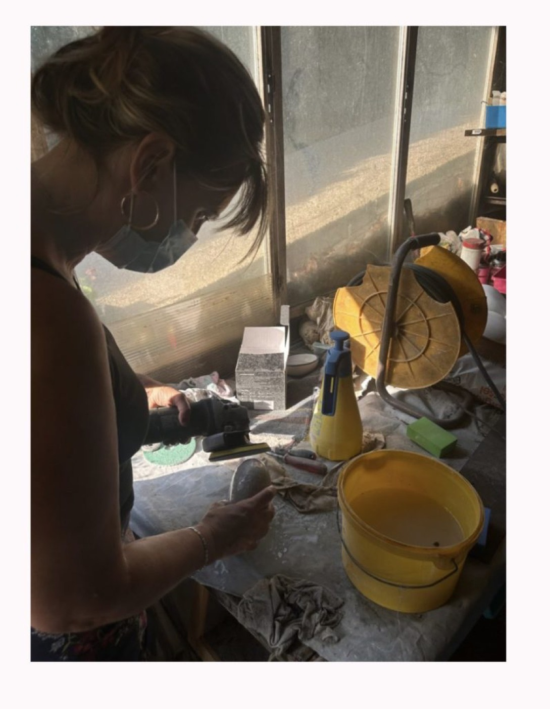

Dans un moment aussi délicat que le deuil, chaque détail compte. Déposer un objet sur une tombe, ce n’est pas seulement un geste : c’est une manière de dire « tu comptes toujours », d’offrir douceur et présence à travers un souvenir.
Aujourd’hui, face aux objets standardisés fabriqués à la chaîne, beaucoup de familles recherchent une alternative plus humaine et plus sincère : une décoration funéraire artisanale, locale et personnalisée.
1. Un hommage qui a une âme
Les plaques et objets funéraires industriels – souvent importés de Chine – proposent des modèles figés : « à ma tante », « à mon parrain »… Des phrases toutes faites, qui ne reflètent pas toujours la singularité de la relation.
En choisissant un artisan, chaque mot, chaque symbole, chaque gravure peut être adapté. On ne rend pas hommage à une catégorie, mais à une personne unique.
⸻
🇫🇷 2. Soutenir l’artisanat local et français
Acheter une décoration funéraire artisanale, c’est faire vivre un artisan français.
Cela permet de soutenir une économie locale, respectueuse, à taille humaine, loin de la production industrielle de masse.
⏳ 3. Des délais courts et un accompagnement humain
Un artisan travaille avec le cœur et reste disponible.
Contrairement aux grandes enseignes, où les délais sont parfois longs et impersonnels, tu bénéficies d’une écoute attentive, de conseils adaptés, et d’une création réalisée dans des temps raisonnables.
4. Une matière naturelle, symbole de sérénité
La pierre, le galet, l’ardoise : ces matières brutes et naturelles apportent une force tranquille et une douceur intemporelle.
Elles se fondent dans le paysage du cimetière tout en restant uniques, contrairement aux objets artificiels ou trop voyants.
5. Un geste tendre qui perpétue les souvenirs
Offrir ou déposer un objet artisanal, c’est offrir plus qu’une décoration : c’est transmettre une émotion.
Chaque galet gravé, chaque ardoise personnalisée devient un souvenir vivant qui apaise, console et perpétue les moments précieux partagés.
